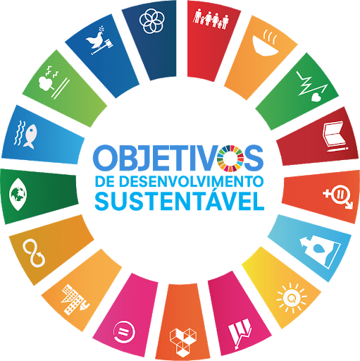
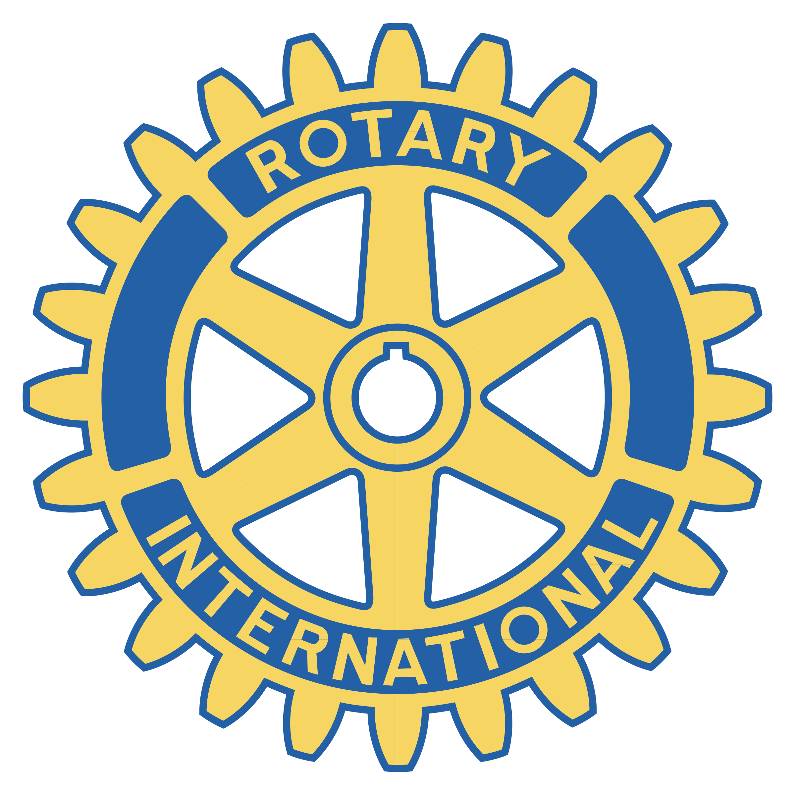
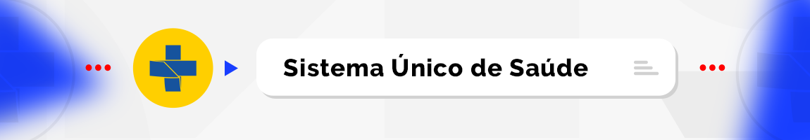
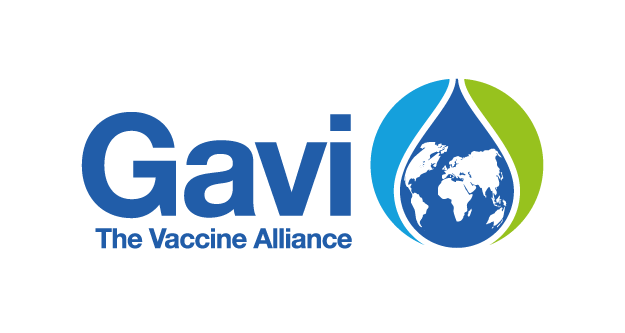

Os Objetivos de Desenvolvimento Sustentável (ODS) são 17 metas globais definidas pela ONU em 2015 para abordar desafios como pobreza, desigualdade e mudanças climáticas até 2030.
REFERÊNCIAS
Foi com base em um projeto a nivel global do Rotary Internacional, a campanha visa a erradiação da
Poliomelite em todo o mundo, levando a vacina para lugarem em que as pessoas não tem facil acesso aos
recursos de saúde.

Rotary Internacional
PROBLEMA
A grande maioria dos paises em todo o mundo possuem a rede de saúde privada, o que dificulta para que a população tenha acesso a medicamentos, tratamentos e vacinas. Um dos principais problemas disso são os preços relacionados a saúde. Por conta do alto preço das pesquisas para o desenvolvimento de novas vacinas, muitas pessoas acabam ficando vulneráveis a doenças e infecções.
SOLUÇÕES EXISTENTES
O Sistema Único de Saúde - SUS é um dos maiores e mais complexos sistemas de saúde pública do mundo, abrangendo desde o simples atendimento para avaliação da pressão arterial, por meio da Atenção Primária, até o transplante de órgãos, garantindo acesso integral, universal e gratuito para toda a população do país. Com a sua criação, o SUS proporcionou o acesso universal ao sistema público de saúde, sem discriminação. A atenção integral à saúde, e não somente aos cuidados assistenciais, passou a ser um direito de todos os brasileiros, desde a gestação e por toda a vida, com foco na saúde com qualidade de vida, visando a prevenção e a promoção da saúde.
Ministério da Saúde
